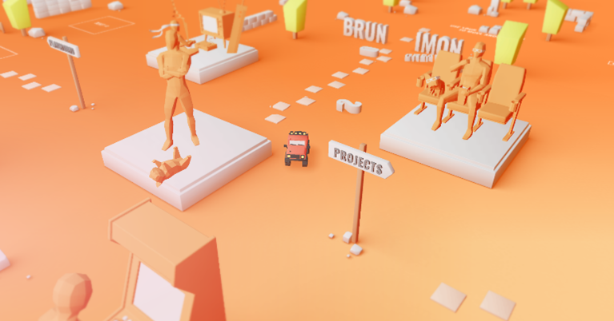
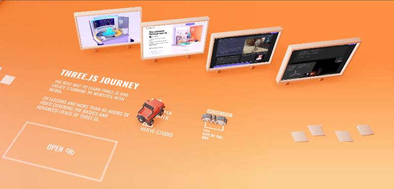
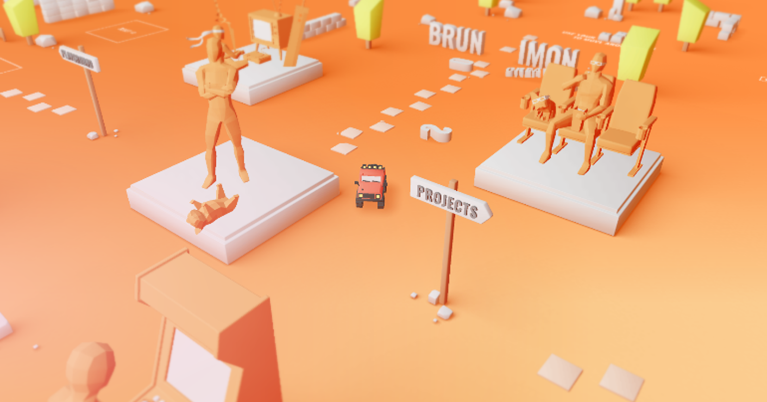
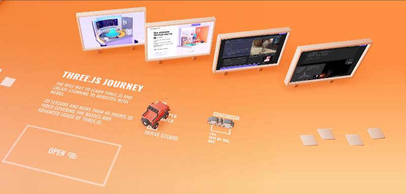

Interaction with the www
Week 2 (19/02 - 23/02)
Reading: "You say you want a Revolution? Hypertext and Laws of Media (1991)"
The reading explores hypertext as a medium and discusses how hypertext is nonlinear and thus allows for more accessibility. Hypertext analysed
in this sense is actually very relevant given that this article was written in 1991. The text explains how new information and learning is
achieved through hypertext and that's very agreeable. Hypertext is so important because it's essentially having a whole dictionary available
to you in one click. I remember when my brother and I were younger and we weren't allowed to have phone or laptops, we would read words for
homework or in books and instead of my parents telling us what a word meant, we would have to spend some time going through a dictionary to
find the meaning. Often times, when we looked up a word, there would be a word in the definition we didn't know, and thus have to look up that
word in the dictionary too... this would happen so often and it would take up so much unnecessary time, therefore hypertext has become a great
and much appreciated tool for me.
In the article, hypertext is explained to allow for dynamic communication. I think this is so important because it not only emphasises learning,
but broadens one's vocabulary, thus allowing for understanding and communication to be a whole lot easier. What I find so fascinating is how the
use of hypertext is such a normally thing now. Speaking about the importance of hypertext in 1991 has definitely shown to be true now. People
use hypertext without even knowing what the term 'hypertext' means. Children doing research for school projects, links to word and phrases being
used in presentations, simply clicking on a word you've typed and having the option to find its meaning, synonyms, or antonyms. It just goes to
show how hypertext has become so very common in modern life and will continue to hold such high value because of its everyday use.
Interaction and the www:
Interaction to me seemed to be a very basic word, simply meaning connection (in my brain). However, in class we learnt that interaction is not
responsive, isn't completely controlled and doesn't respond in a random way. This differs completely because, although interacting with someone
or something implies there's a connection with whatever you are interacting with, connection connotes reaction and response. I realised that
interacting with something doesn't always necessarily mean that you are getting anything out of the interaction and can be done very briefly,
like opening a door or walking across a road. Yes, these things were interacted with, however I have no complete connection to these things when
these actions are done. It also happens momentarily. Looking at the word digitally, its explained that once an object is represented in a
computer, it automatically becomes responsive. Therefore, to call computer media 'interactive' is meaningless [1]. This was so strange and so so
so true. EVERYTHING on a computer is interactive and thus the word has no value to the computer world. It's crazy to think that a whole world of
interactions occurs just by turning on your computer - a introvert's worst nightmare if this was the real world. We learnt that the term
'ergodic' was of better use in the digital space. It means to have work done and I think that is a much better way to describe computer media.
(Geeking out for a bit) This is super cool and relevant to building this website because in order for all of this to have gotten to where it is,
a lot of work had to be done rather than just interactions with html, css and java.
Discussing URL scheme and first wireframe idea:
Gosh. I really want my URL to be something super cool and to make it something I wont regret when I'm older (I know I can change it in the
future, but I'd prefer to not worry about it then). I have some pretty weird and basic ideas... here they are:
- Mikisha.aryanna.com (very close to my personal email address which may be a good thing, or very bad thing)
- Mikisha.pillay.com (very basic as well and doesn't include my middle name)
- map.com (very cute and concise, includes all initials)
- miks_a_lot.com (I love this, but I feel like it may be used elsewhere and could possibly give off the wrong idea)
- miks.com (also cute and concise, but many people may have the nickname 'miks')
This is me just bouncing off ideas. I would like for the URL to have some sort of animation in it with each page/link opened on my website.
I think it would add to the UI and UX, and therefore make viewers feel like they've entered a pretty cool world.
In terms of designing or imagining a wireframe, most of my ideas were based on aesthetics and how the website would look. I drew up an idea,
but I have so many more that I'm trying to put down on paper to properly execute. You'll most likely see these ideas in future blogs, which
will be so cool because you'll get to see which idea I went with.


 *Please mind my handwriting, writing on a drawing pad is difficult at first*
*Please mind my handwriting, writing on a drawing pad is difficult at first*
Inspirational websites and reference material:
I had a look at some pretty cool portfolio websites, and it was so cool to see how much work and effort was put into some of these. I will
always talk about Bruno Simon. His portfolio website was one of the first websites I saw and was immediately blown away. Below are some
pictures of his website. The whole thing is a 3D world explored through driving a car and navigating the car with the arrow keys.
 



Although this website is so beautifully made, I did find it quite difficult to use the car as a means to get around the website. My directions
were often wrong, and it took pretty long to get to areas in the website I wanted to go.
Another website I found to be rather engaging, super fun and inclusive of brilliant UI and UX is the madbox website. It's pretty similar to the
Bruno Simon website however its much easier to navigate around and the interactivity is super fun, sort of feels like you're in this cool world
you get to travel around, and I found it to be pretty effective in gathering information about the company. Below are some images of the website
and how it's explored.


References: [1] - 'Interaction with the www' at
https://ulwazi.wits.ac.za/courses/63415/pages/class-interaction-and-the-www [Accessed: 22/02/2024]